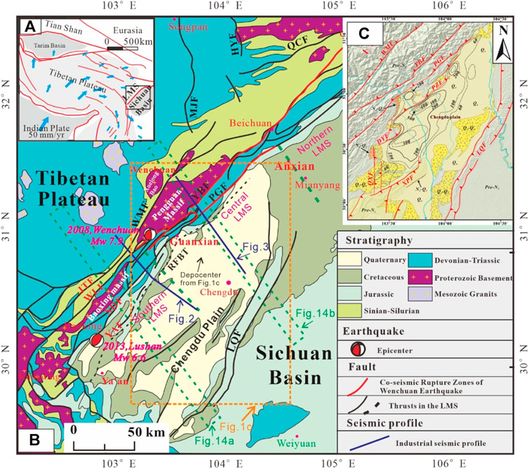
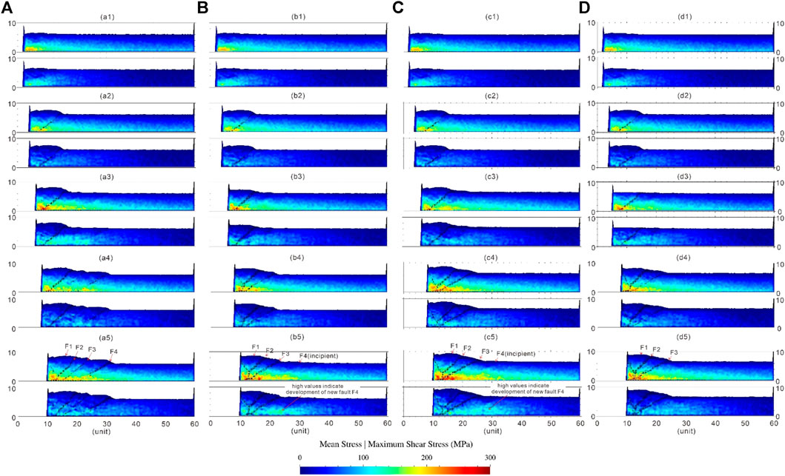
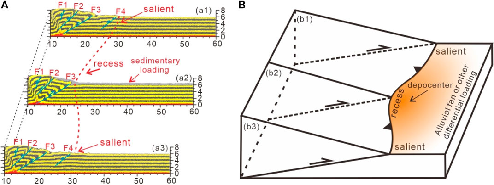

本文以龙门山褶皱冲断带为例，通过四个离散元数值模拟实验，揭示了：（1）剥蚀和沉积负载作用在活动褶皱冲断带新、老断层形成及其应力应变时空演化中具有重要影响作用；（2）研究区存在的差异性剥蚀和差异性同构造沉积负载作用可能是导致龙门山中段和南段形成差异性断裂活动及隆升的重要因素之一；（3）同构造沉积负载分布和发育（如成都平原的生长）对其腹部冲断楔中沿前缘断层面中的应力传播和应变汇聚有巨大的阻挡作用，导致应力汇聚主要发生在冲断楔体内部的主要活动断层上，进而在某种程度上解释了相比较龙门山北段，为什么其中段和南段更有利于地震的产生 (Wu et al.,2021)。
Wu Z, Yin H, Li C, Yang X, Wang L, Wang F, Dong S and Jia D (2021) Influence of Regional Erosion and Sedimentary Loading on Fault Activities in Active Fold-Thrust Belts: Insights From Discrete Element Simulation and the Southern and Central Longmen Shan Fold- Thrust Belt. Front. Earth Sci. 9:659682. doi: 10.3389/feart.2021.659682题目
Influence of Regional Erosion and Sedimentary Loading on Fault Activities in Active Fold-Thrust Belts: Insights From Discrete Element Simulation and the Southern and Central Longmen Shan Fold-Thrust Belt
作者
Wu Z1,2, Yin H3, Li C1,2, Yang X2, Wang L2, Wang F2, Dong S3 and Jia D3
- State Key Laboratory of Nuclear Resources and Environment, East China University of Technology, Nanchang, China
- School of Earth Sciences, East China University of Technology, Nanchang, China
- School of Earth Sciences and Engineering, Nanjing University, Nanjing, China
摘要
Four groups of discrete element models (DEMs) were set-up to simulate and analyze the influence of regional erosion and sedimentary loading on the formation and spatial-temporal evolution of faults in the southern and central Longmen Shan (LMS) active fold-thrust belt. The interior characteristics of faults in the southern and central LMS fold-thrust belt were also evaluated during the interaction of tectonic processes and surface processes according to the stress-strain analysis from DEM results. The results showed that synkinematic erosion promoted the reactivation of pre-existing faults in thrust wedges and also retarded the formation and development of new incipient faults in the pre-wedge regions. Meanwhile, synkinematic sedimentation also delayed the development of new incipient faults in the pre-wedge regions by promoting the development of thrust faults in the front of thrust wedges, causing these thrust wedges in supercritical stages with relatively narrow wedge lengths. According to these DEM results, we infer that: 1) The characteristics of erosion and sedimentation in the central and southern LMS have important influences on the activities of large faults which are extended into the deep detachment layer; 2) Besides differential erosion, the differential sedimentary loading may also be one of the important factors for the along-strike differential evolution of the LMS fold-thrust belt. This kind of differential deposition may lead to differential fault activity and uplift in the interior thrust wedge and pre-wedge region in the central and southern LMS; 3) Compared to the northern LMS, the central LMS and southern LMS is more conducive to the occurrence of earthquakes, because of synkinematic sedimentation (such as the growth of Chengdu plain) has a greater blocking effect on the stress propagation and strain convergence on the fault planes of front faults of an active thrust wedge.

FIGURE 1 | Regional map of the LMS fold-thrust belt (A) and its geological structure map (B) (modified from (Sun et al.,2016), Co-seismic rupture zones from (Xu et al.,2009). © shows the thickness contour lines (100 m interval) of the Upper Pliocene and Quaternary (syntectonic sedimentary strata) beneath the Chengdu plain (cited from (Li et al.,2018). JTF, Jintang Fault; WLF, Wulong Fault; WMF, Wenxian-Maoxian Fault; SDF, Shuangshi-Dachuan Fault; PGF, Pengxian-Guanxian Fault; YBF, Yingxiu-Beichuan Fault; YAF, Yaan Fault; LQF, Longquanshan Fault; QCF, Qingchuan Fault; MJF, Minjiang Fault; HYF, Huya Fault; RFBT, Range Front Blind Thrust.

FIGURE 10 | Stress analysis of DEM simulations in Model 1 (A), Model 2 (B), Model 3 ©, and Model 4 (D). Mean stress (upper figure) and maximum shear stress (lower figure) are presented after every 2 units shortening. The main fault shapes (shades of black) are assigned to the stress maps.
